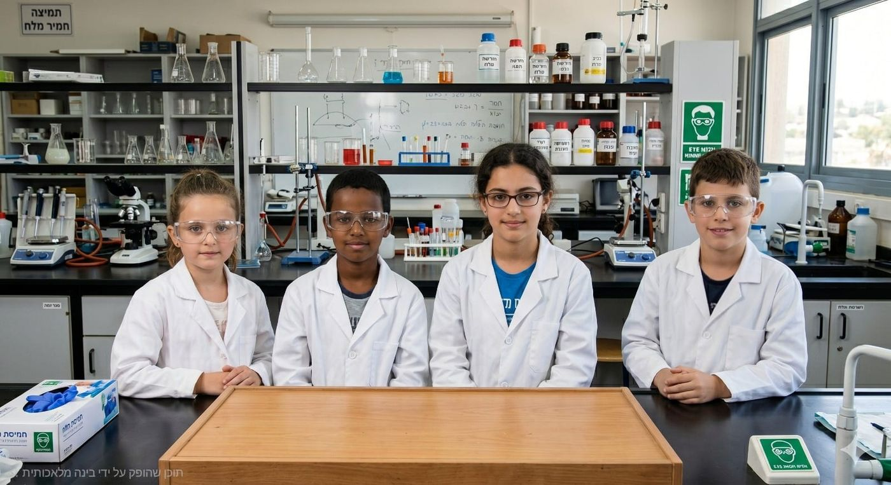
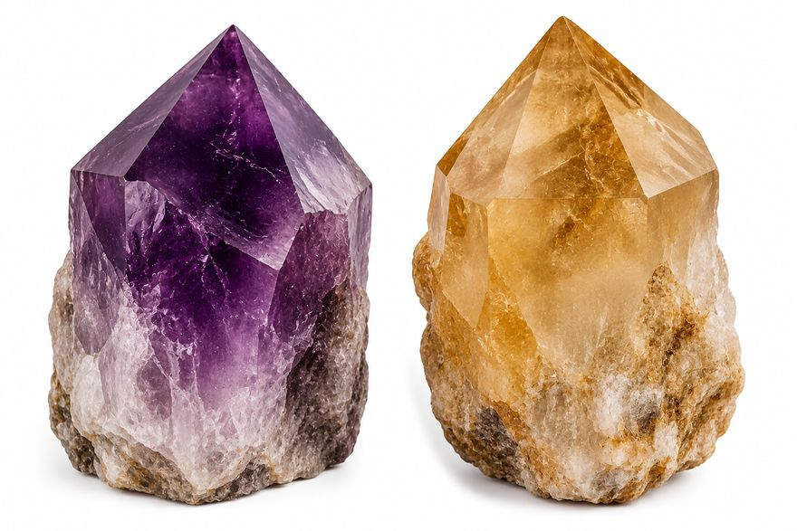

סיימנו את שלב הלימוד, נעבור לתרגול הראשון
נענה על 5 שאלות
צריך לענות נכון על 4 שאלות לפחות.
בניסוי מעבדה הילה מילאה משורה במים עד לקו 50 מ"ל, והכניסה פנימה אבן קטנה.
גובה המים במשורה עלה ל-73 מ"ל.
מה נפח האבן?

במפעל לייצור כדורי באולינג קרתה תקלה המשפיעה על נפח הכדורים ועלולה לפגום ביכולת לשחק עם הכדורים.
לאחר תיקון התקלה מנהל המפעל רצה לבדוק את הנפח של הכדור האחרון שיצא מפס הייצור כדי לוודא שהתקלה אכן נפתרה.
איזו שיטה מתאימה למדידת נפח הכדור?
הילדים במעבדה מנסים למדוד נפח של כפית עשויה ממתכת כדי לייצר סדרת כפיות זהות.
לחצו על הילד שהטיעון שלו הוא מדעי ומבוסס על ראיה.

גררו כל גוף לשיטת מדידת הנפח המתאימה לו.
גופים למדידה:

אופק ואחיו קיבלו במתנה מסבתא קריסטלים ענקיים.
הם רצו לדעת איזה קריסטל הוא בעל נפח גדול יותר.
הם מילאו כלי גדול במים עד הקצה, השקיעו את הקריסטל הראשון, אספו את המים שנשפכו ומדדו את נפחם בכלי מדידה.
אופק טוען: "בעזרת כמות המים שנשפכו אפשר לדעת את נפח הקריסטל."
האם אופק צודק?